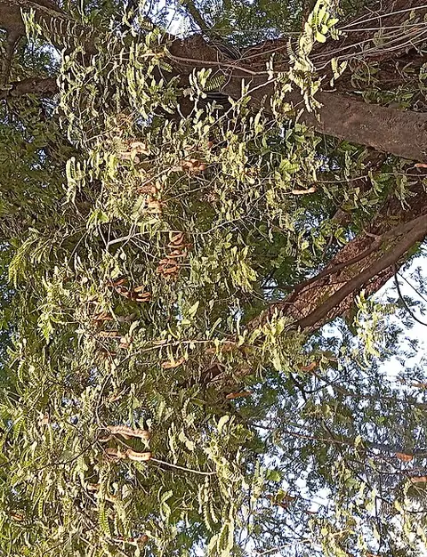

Main course · Popular in West coast and Deccan
Chinch-gulachi amti
Chinch-gulachi amti is made with wild tamarind, a favourite in West coast and Deccan.

How do you make chinch-gulachi amti?
Sweet-sour tamarind and jaggery dal with goda masala. A Pune and Konkan staple.
Wild ingredients
- Tamarind (Tamarindus indica): in season January to April
Watch the recipe

Video: MadhurasRecipe Marathi on YouTube